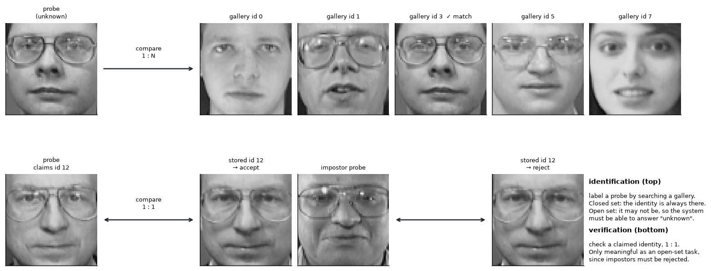
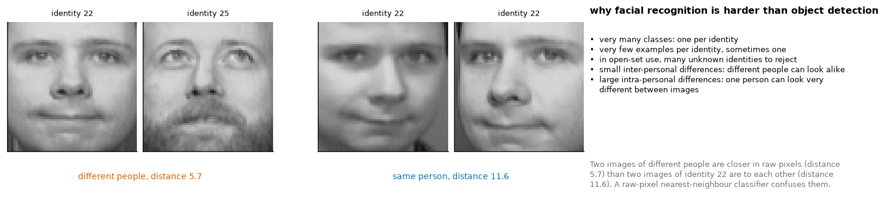
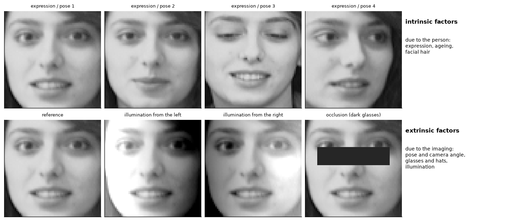
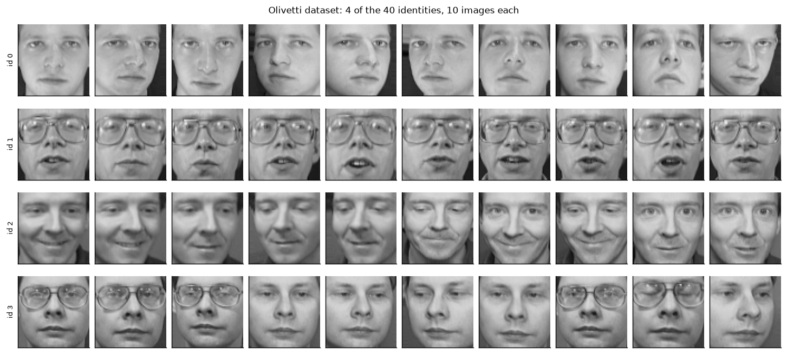
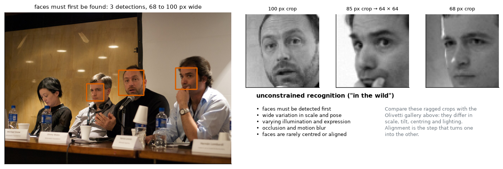
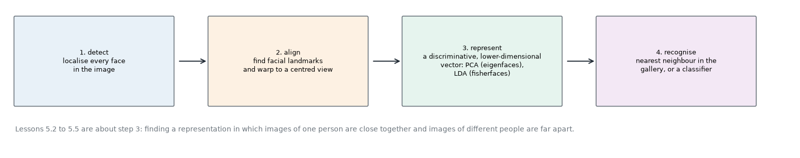

Lesson 05.01
Introduction to facial recognition
The identification and verification tasks, open and closed sets, why recognising faces is harder than detecting objects, intra-personal variation, constrained versus unconstrained datasets, and the stages of a recognition pipeline.
Learning outcomes
After this lesson you should be able to:
- distinguish facial identification from verification, and open from closed set;
- explain why facial recognition is harder than general object detection;
- separate inter-personal from intra-personal differences, and intrinsic from extrinsic factors;
- contrast constrained and unconstrained recognition;
- list the stages of a modern facial-recognition pipeline.
The two tasks
Identification
In facial identification the image of an unknown person, called the probe, is compared against multiple identities held in a gallery and an identity label is assigned. The task comes in two forms:
- closed set: every probe identity is present in the gallery, so the probe can simply be given the best match;
- open set: the probe identity may not be in the gallery, and the system must label such a face unknown.
The open-set case is the harder one, because the system has to reject unknown faces at an acceptable error rate. Identification is used widely in security and surveillance, where databases of facial images are searched automatically, and in media applications, where an index of the actors on screen can be generated automatically.
Verification
In facial verification we check a purported identity: is this person who they say they are? The probe is compared against available ground-truth examples of the claimed identity, so it is a 1:1 comparison, and it is a special case of open-set identification. Verification only makes sense as an open-set task, because the system must be tested with impostor faces. Applications include biometric identification such as phone unlocking, airport security, access control and authentication for financial transactions.

Why facial recognition is harder
Facial recognition can be considered a sub-task of object detection, but several things make it more difficult:
- there may be very many classes, one per identity, especially in a large database;
- there may be very few examples of each identity, possibly only one;
- in open-set use there may be a very large number of unknown identities to reject;
- classes of object are often quite distinct, think of cars versus footballs, whereas faces are separated only by small inter-personal differences, and different people can look alike;
- images of one person vary a great deal, the intra-personal differences.

Intra-personal variation
Intra-personal differences have two sources. Intrinsic factors belong to the person: changes of expression, ageing, and the presence or absence of facial hair. Extrinsic factors come from the imaging conditions: the pose of the person or camera angle, facial paraphernalia such as hats and glasses, which act like occlusion, and illumination, which has a large effect on appearance and consequently on performance.

Constrained and unconstrained recognition
Because the problem is so challenging, early approaches used constrained datasets. The Olivetti dataset used throughout this section consists of centred frontal views with limited pose and expression variation, taken under constant illumination, with a limited number of identities, and recognition is performed closed-set with a train/test split. Such datasets allowed the first successful methods to be developed, but their performance is not robust: training or testing under different conditions, for example varying illumination or pose, often gives poor results. Many modern applications such as access control do operate under constrained conditions, so consistent performance is achievable there.

Unconstrained facial recognition, or recognition "in the wild", is much harder. Faces must first be detected in the image, and there is wide variation in scale, pose, illumination, expression and occlusion.


The facial-recognition pipeline
A modern unconstrained system has several stages:
- Localise the face in the image. Because faces vary greatly in scale, specialised face-detection networks are used.
- Align the detected face to a centred view, by finding facial landmarks and warping the image.
- Represent the face in a more discriminative form. In classical systems this is a dimension-reducing transformation such as principal component analysis in the Eigenface method.
- Recognise, often with a simple classifier such as nearest neighbours, sometimes with something more complex.
The remaining lessons of this section are about stage 3.

Check your understanding
1. In facial identification, the image of the unknown person is called the
The probe is compared against the gallery, which holds the known identities.
2. What distinguishes open-set from closed-set identification?
Rejecting unknown identities at an acceptable error rate is what makes the open-set task harder.
3. Facial verification is
Verification must be tested with impostors, so it only makes sense as an open-set task.
4. Which is an EXTRINSIC intra-personal factor?
Extrinsic factors come from the imaging conditions; intrinsic factors belong to the person.
5. Why is facial recognition harder than typical object detection?
Car versus football is an easy distinction; two faces are separated only by small differences.
6. In the recognition pipeline, what does the alignment stage do?
Alignment is what turns a ragged detector crop into something resembling a constrained dataset image.
Image credits
- Jimmy answering questions, Beatrice Murch, CC BY 3.0
- The Database of Faces (Olivetti / AT&T), AT&T Laboratories Cambridge, free for research use
Other figures are generated from synthetic data by the lesson engines.